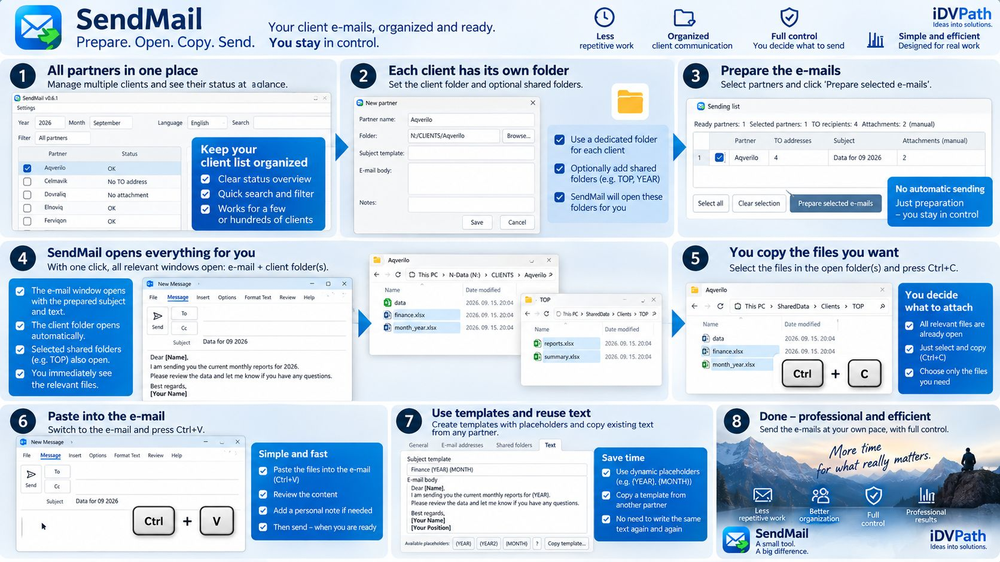
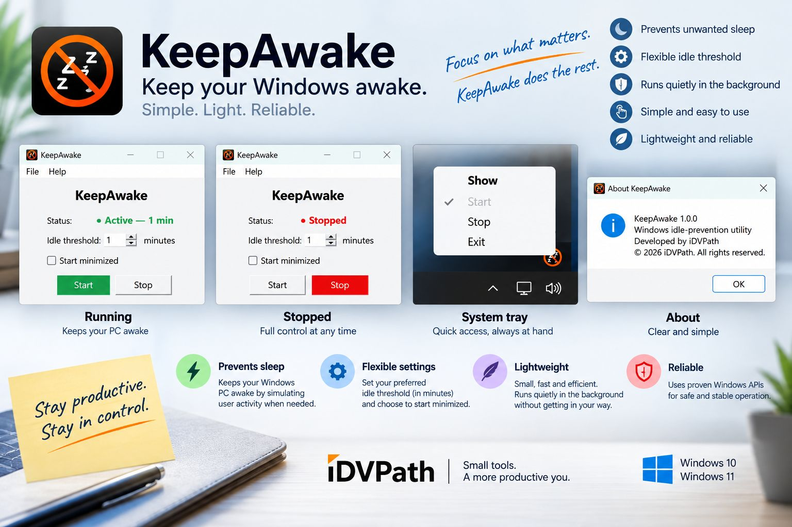

Software & Utilities
Practical applications that simplify recurring work and everyday computer tasks.
Ideas into solutions.
We create practical software, data and workflow solutions, and tailored digital experiences that remove unnecessary work and make everyday processes clearer.
What we do
Practical applications that simplify recurring work and everyday computer tasks.
Comparison, validation, reporting, analysis, and simplification of repetitive data processes.
Clean, purpose-built websites tailored to real requirements rather than unnecessary complexity.
Software & Utilities
A growing portfolio of useful Windows applications, shaped by real processes and refined around the people who use them.

SendMail helps prepare recurring client emails with partner-specific recipients and templates, reusable month and year placeholders, and an overview of relevant client or shared folders and expected files.
It prepares the workspace; you manually select, copy, and paste attachments, then review and send the email yourself.
Product demoApproximately one minute

A lightweight Windows utility that prevents unwanted sleep after a configurable inactivity threshold and remains conveniently available from the system tray.
A Windows monitoring utility currently being modernized as part of the iDVPath application family.
Data & Workflow Solutions
Practical support for the data and routines that keep work moving—designed around the process you actually have.
Clear, repeatable validation workflows for recurring Excel files and structured datasets—helping identify differences, missing records, and inconsistent or unexpected changes.
Excel and Power BI-style reporting and analysis that turns structured data into clearer, more useful information.
Tailored, practical solutions that simplify repetitive manual processes and reduce unnecessary recurring steps.
Custom Web Solutions
iDVPath creates clean, responsive, purpose-built websites based on individual requirements. The focus stays on clarity, usability, and doing what the site needs to do—without unnecessary complexity.
How we think
See how the work is actually done and where time is lost.
Find the real bottleneck instead of automating everything.
Build the smallest practical solution that genuinely helps.
Test in real work, learn from use, and improve what matters.
Our approach
About iDVPath
iDVPath is an independent practical digital-solutions brand focused on useful software, data and workflow improvement, automation, analysis, and tailored web solutions.
We start with the problem, find a clearer path, and build only what helps. Whether that means a focused utility, a more reliable data process, or a purpose-built website, the aim stays the same: Ideas into solutions.
Contact
If a recurring task, data workflow, or digital experience should be clearer and easier, it may be a problem worth solving.